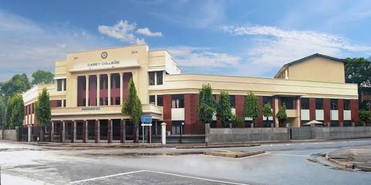
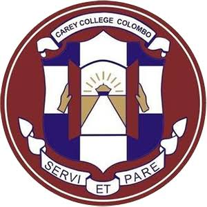
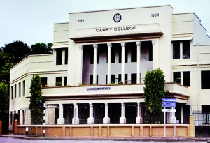

Serve and Obey


No. 46, Kynsey Road, Colombo 8 · Founded 1914
As the centenary year of the Baptist mission in Ceylon drew near — one hundred years since Rev. Chater first preached the Gospel in Colombo — the Baptists resolved to mark it with something permanent and life-giving. On 12th January 1914, Carey College was founded as a Boys' English School, named in honour of Rev. Dr. William Carey, the Father of Modern Missions who had co-founded the Baptist Missionary Society in 1792 and whose vision had sent missionaries to Ceylon in the first place.
The Waldock Memorial Hall — funded by the family and friends of the beloved missionary-builder Rev. Fred Waldock — was formally opened on 3rd July 1914 by Mr. R.V.B. Byrde, the Mayor of Colombo. It became the architectural heart of the new college campus, standing on the same Kynsey Road premises where a BMS Girls' Boarding School had served the community since 1846 — making the site one of the longest-serving Baptist educational campuses in Asia.
The first Principal, Rev. H.J. Charter (1914–1921), was the grandson of George Charter, who had helped build the Pettah Baptist Church in 1850. Under his leadership, the college established its school Motto, its first Sports Meet, its Scouting programme and the House System — one house named Waldock House in perpetual tribute to the builder-missionary who had made the college possible.
In 1960, Carey College — along with 36 other Baptist schools — was transferred to the Government of Ceylon under the Schools Takeover Act. The college continues to serve the nation today as a national school, its buildings still standing at the same Kynsey Road address where it was born 110 years ago.
12th January 1914 — as the Centenary Effort of the Baptist Missionary Society's work in Ceylon.
No. 46, Kynsey Road, Colombo 8 — the same premises as the Sri Lanka Baptist Church Headquarters.
Rev. H.J. Charter, 1914–1921. Grandson of George Charter, who built the Pettah Baptist Church in 1850.
Opened 3rd July 1914 by the Mayor of Colombo. Funded in memory of Rev. Fred Waldock — architect, builder and first Baptist Union President.
1960 — Carey College was transferred to the Government of Ceylon under the Schools Takeover Act, along with 36 other Baptist schools.
There are nine Carey Colleges worldwide — in Sri Lanka, New Zealand, Brazil and beyond — all named in honour of Rev. Dr. William Carey.
Grandson of George Charter who built the Pettah Baptist Church in 1850. Under his leadership the college established its motto, the house system (including Waldock House), sports meets, scouting and its first prize giving ceremonies — shaping Carey College's identity for generations.
The Baptist Missionary Society opened a Girls' Boarding School on the same Kynsey Road premises in 1846 under Miss Eliza Davies. This school served the community for over a century and shares the site's legacy of Baptist Christian education that predates Carey College itself.
Though Waldock passed away before the college opened, the Waldock Memorial Hall — funded by his family in his memory — became the college's architectural centrepiece. Waldock House, one of the school's original four houses, also bears his name permanently on the roll of the college's history.
Additional principal records can be added above. Contact the school's alumni association for a complete list.
+94 11 269 2293